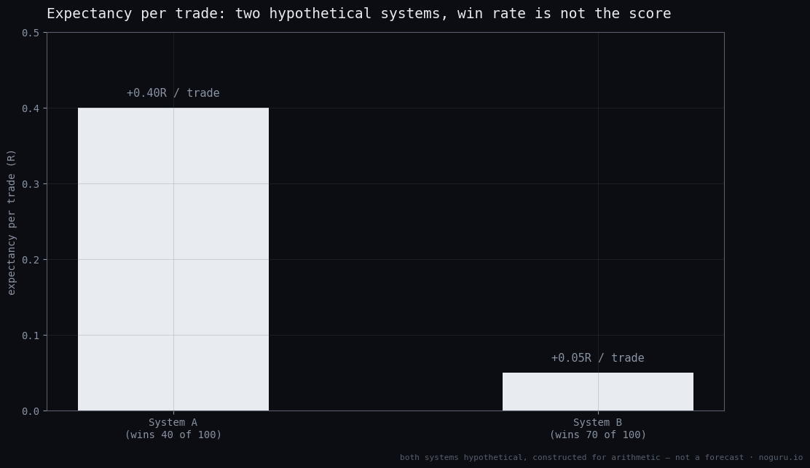

Trading Academy · Module 1 — Why slow wins · Lesson 3/4 · Lesson 3 of 22 in the curriculum · ~6 min read
Expectancy: why win rate isn't the score
A system that wins seven trades out of ten can lose money. A system that loses six out of ten can be excellent. How often you win is not the score — the score is expectancy: how much you make when right, times how often, minus how much you lose when wrong, times how often.
Find something on this page
Read this lesson in context
This is the original public lesson portion. Its hypothetical examples teach general trading concepts. References to futures, stops, other strategies or older track-record formats are not statements of NoGuru’s current spot configuration.
The source’s statement about track-record R-multiples and headline win percentages is older wording; the current evidence is a before-fee signal model with different fields.
Public reading
One unit makes this easy to compute: the R-multiple . R is simply the amount you risked on a trade — the distance from entry to stop-loss, in money. A trade that hits its stop is −1R. A trade that makes twice what it risked is +2R. Measuring in R strips out account size and lets any two trades, or any two systems, be compared honestly.
Now compare two systems — both invented for this page, neither is real:
| System A (hypothetical) | System B (hypothetical) | |
|---|---|---|
| Wins | 4 of every 10 trades | 7 of every 10 trades |
| Average winner | +2.5R | +0.5R |
| Average loser | −1R | −1R |
| Expectancy per trade | +0.40R | +0.05R |
| Per 100 trades | +40R | +5R |
Both systems are hypothetical, constructed for arithmetic. Expectancy = (share of wins × average win) − (share of losses × average loss), everything in R.

System A is wrong more often than it is right — and produces eight times what B does, because its winners are two and a half times its losers, while B's winners are half the size of its losers. B, meanwhile, delivers the thing that feels like skill: being right seven times out of ten. That feeling is exactly what makes win frequency such an effective sales number, and such a poor measure of a method. It is one factor of two, and often the less important one.
This is also why you will not find a headline win-percentage anywhere on this site: our track record lists every closed trade with its R-multiple and sample counts instead, because that is the honest form of the information.
The full lesson works both systems through per-100-trades arithmetic by hand, shows a hypothetical system that wins seven of ten and still bleeds money, explains why high-frequency-of-winning systems so often hide exactly that shape, and ends with an exercise: computing the expectancy of both systems yourself, then of your own trading — and the reason to distrust that last number.
← Leverage, liquidation, and an ordinary Tuesday Survive first: compounding needs a survivor →
Original source risk note
Trading cryptocurrencies involves substantial risk of loss and is not suitable for every investor. The academy teaches method and arithmetic — it does not and cannot promise trading results. Nothing here is investment advice.